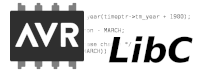

|  |
AVR-LibC is a Free Software project whose goal is to provide a high quality C library for use with GCC on Atmel AVR microcontrollers. Together, AVR-binutils, AVR-GCC, and AVR-LibC form the heart of the Free Software toolchain for the Atmel AVR microcontrollers. AVR-LibC is licensed under a single unified license. This so-called modified Berkeley license is intented to be compatible with most Free Software licenses like the GPL, yet impose as little restrictions for the use of the library in closed-source commercial applications as possible. |
This page links the documentation for various versions of AVR-LibC.
| Most recent | HTML online | ||
| v2.2.0 | HTML online | HTML tree | |
| v2.1.0 | HTML online | HTML tree | |
| v2.0.0 | HTML online | HTML tree | |
| v1.8.1 | HTML online | HTML tree | |
AVR-LibC has previously been maintained on savannah.nongnu.org. Old releases and documentation can be found at Savannah's release page.
Back to AVR-LibC Project